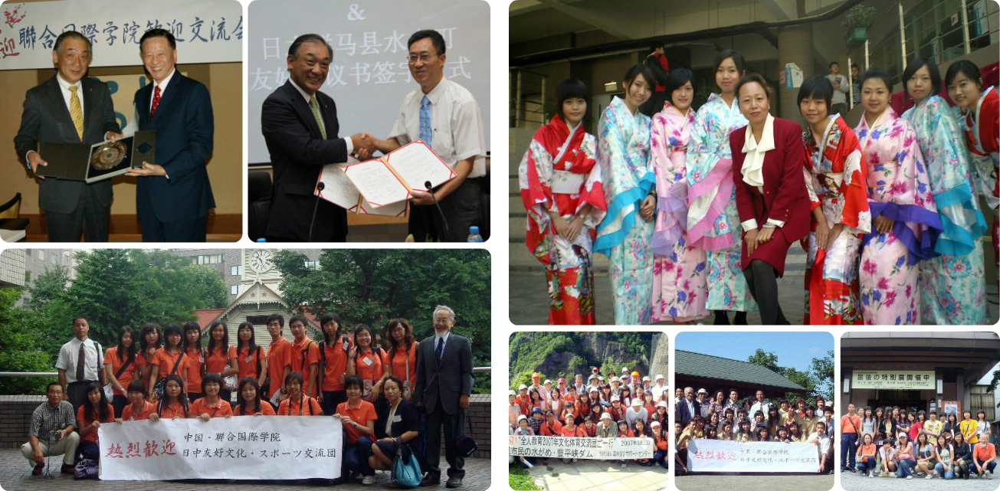

Japanese I
Author: Luo Zichen (Laurence)
Japanese is an East Asian language spoken by about 125 million speakers, primarily in Japan, where it is the national language. It is a member of the Japonic (or Japanese-Ryukyuan) language family, whose relation to other language groups, particularly to Korean and the suggested Altaic language family, is debated but mostly seen as discredited.
UIC is currently having three Japanese courses for students of different language levels, including Japanese I, Japanese II and Japanese III.
In the Japanese I, the course I am attending in, we are expected to have a basic understanding of the Japanese culture, and have a grisp of the foundamental knowledge in its language.
Diverse Activities held by Japanese Department and WPE Departemnt.
Course Features:
- Course will be taught by professors who have rich experience in Japan.
- Students will be able to sing simple Japanese songs after taking this course.
- Students can learn more about the foreign culture and custom.
Link to Janpanese subject teacher’s website: Ms. Lily Xiao.
You can also visit the: "Japanese at UIC" website to learn more about this course.